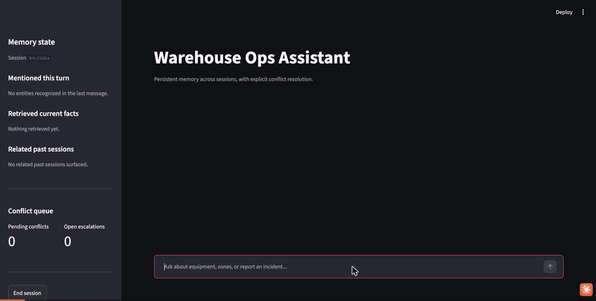

A warehouse-operations assistant with persistent long-term memory across sessions. The engineering problem isn't memory storage — it's conflict resolution with provenance: every fact carries a confidence and timestamp, every overwrite is logged with its source session, and high-stakes contradictions are surfaced to a human instead of auto-resolved.
An unverified incident is reported, escalated for lack of prior record, then a
conflicting "it's fixed now" follow-up gets flagged — status is a
safety-relevant attribute, so it's staged for human confirmation instead of silently
overwritten. Accepting it from the sidebar resolves the conflict and updates the record.

Live recording against the real stack — Postgres, Qdrant, and Claude — no mocks.
Two-tier long-term memory, wired through a LangGraph state machine.
Entities (equipment, zones) and an append-only fact ledger — status, last-serviced, confidence, timestamp — with a full write/overwrite audit trail for provenance.
Per-session conversation summaries, embedded for semantic recall — "has anything like this happened before" across sessions, not just exact fact lookups.
Simple and auditable rather than learned — anyone can read
classify_stakes() and know exactly why a contradiction was or
wasn't auto-resolved.
Auto-resolved by observed_at recency, not insertion order — a
backdated correction can't clobber a fact observed more recently. Exact ties fall
back to a human, since recency alone can't decide.
Safety-relevant attributes (equipment/zone status) and low-confidence
observations never auto-resolve. Staged as PENDING_CONFIRMATION and
logged as an open escalation for a human to accept or reject.
Measured against the real stack, not mocks.
| Metric | Baseline |
|---|---|
| Memory retrieval precision | 100% precision / 100% recall on a labeled entity-mention set |
| Conflict-resolution accuracy | 100% (10/10) against a labeled contradiction set |
| Cross-session recall | 100% structured; live semantic recall verified across 5 simulated sessions |
| p50 / p95 latency | ≈10s / ≈52s end-to-end perceive→respond (real Claude + Voyage calls) |
Reproduce: python -m src.eval.run_eval